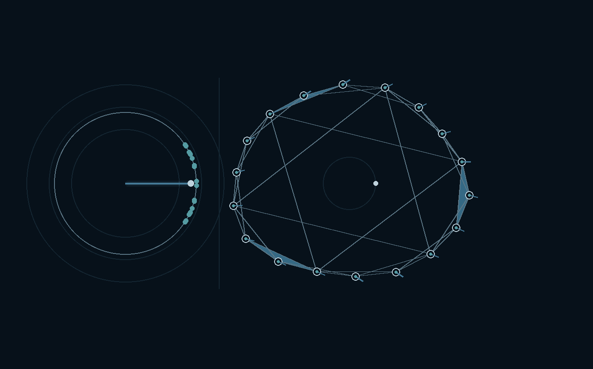

Nonlinear dynamics · Statistical physics · Complex systems

Research
Questions I work on
I study collective behavior in interacting nonlinear systems. The questions below recur across much of my work: how coherence begins, how interaction geometry changes it, how symmetry organizes periodic states, and when reduced oscillator models remain faithful to physical arrays.
Research in progress
Current directions
These questions extend my work on heterogeneous oscillator populations, higher-order interactions, symmetry breaking, and physical oscillator arrays.
Publications
Selected work
About
Research profile
I am an applied mathematician and theoretical physicist studying collective behavior in nonlinear and stochastic systems. I am interested in how microscopic dynamics and interactions determine the onset and selection of collective states, and how these transitions change with heterogeneity, symmetry, noise, delay, and network structure.
I received my Ph.D. in Physics from Jawaharlal Nehru University in 2022, where I studied the dynamics of heterogeneous oscillator populations with Ramakrishna Ramaswamy and Debashis Ghoshal. Since then, my work has considered higher-order interactions, symmetry breaking, delayed and stochastic oscillator systems, and physical oscillator arrays.
Methods and computation
Research appointments
Teaching
Teaching
Contact
Contact
For research, collaboration, seminars, or academic inquiries, email is the simplest way to reach me.